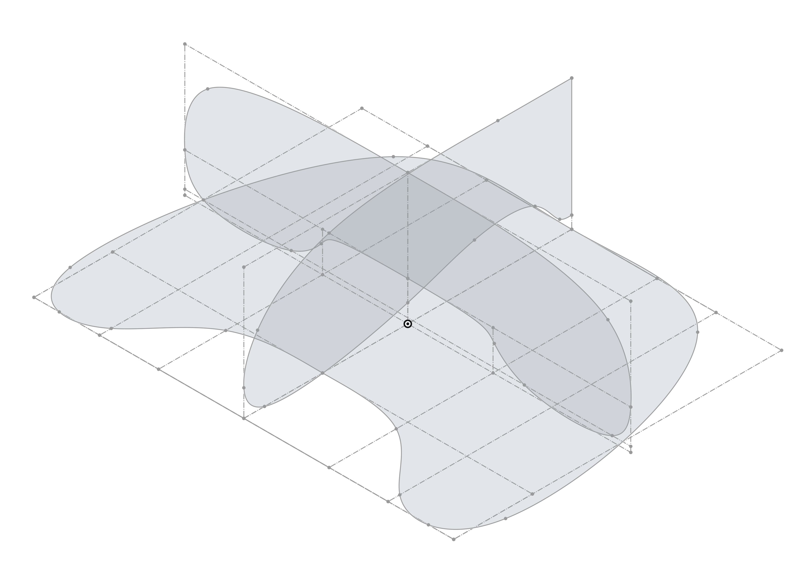
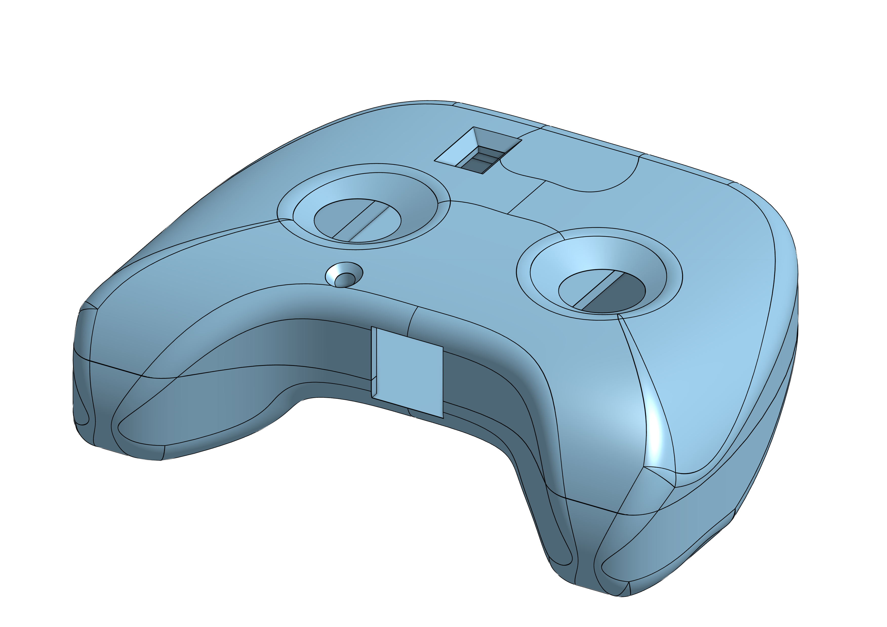
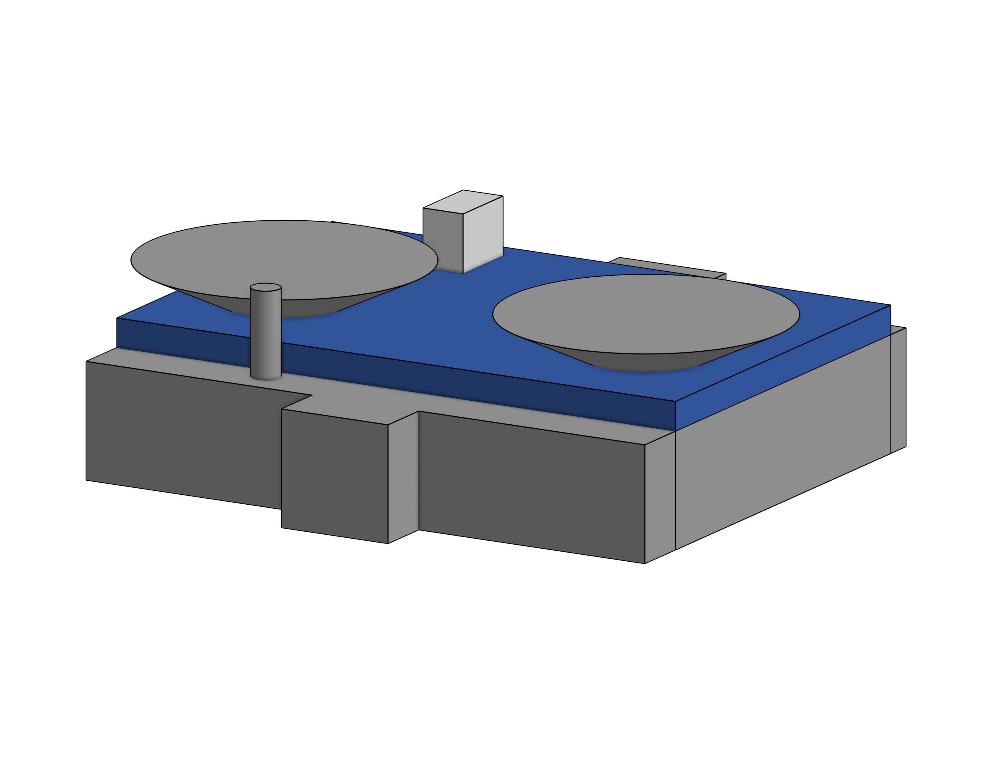
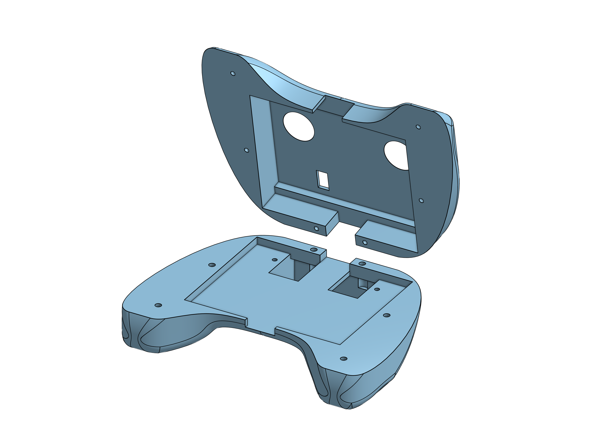
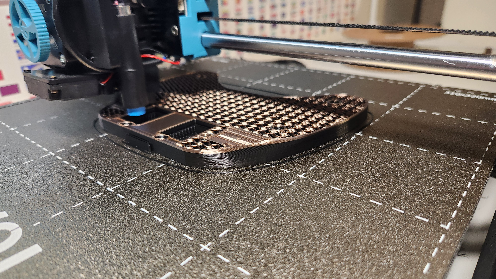
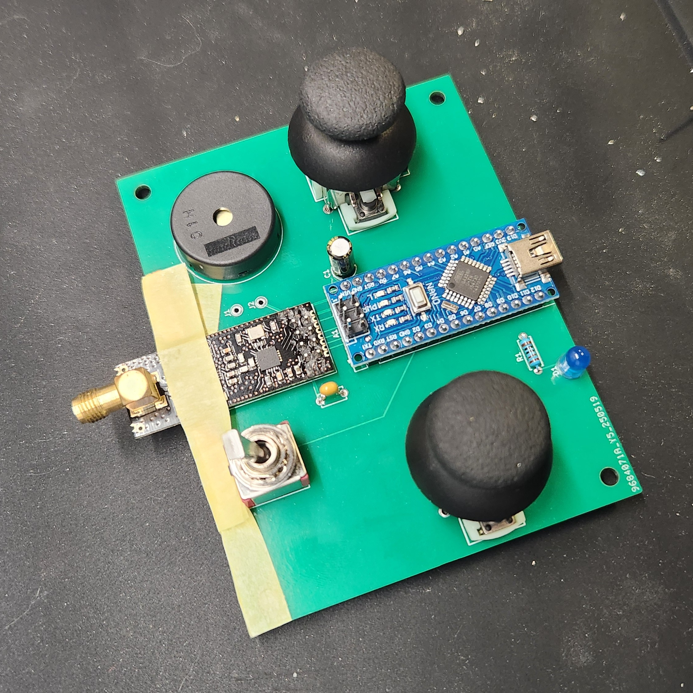

The first thing I did this week was load up Shape, a cloud-based CAD platform that allows users to create
collaborative 3D models in real time from any device, making it ideal for me since I work on both my
home computer and laptop. I have worked with CAD in the past when I acquired my 3D printer, so I didn't
have to learn how to use Onshape; I could go straight into it. I initially chose Onshape as my CAD
software because it is cloud-based. Still, it is also free. I could have used Fusion 360, which is one
of the best CADs available, but it's not free and comes at a significant cost. Although I am a student,
I would be able to use it for free, but after I graduate, I will have to pay, so I decided to use a card
that I can use for free forever.

The controller's shape can be quite curvy and is not a simple box. Although I could have made a box, I
wanted to give myself a little challenge for the extra comfort it would give me.
The way that OnShape works is very simple. At its basics, you draw a scratch, a 2D drawing of shapes
with dimensions, and then you can extend it to get three dimensions. This makes rectangular shapes easy
to make in Onshape. I did the same thing for my design, except I used a spline, a multi-point curve,
allowing me to have a curvy shape.
I created sketches of all three faces—top, side, and front- to achieve a curvy shape from every angle. I
then extruded each face and retained only the volume overlapping all three sketches. The image above
illustrates these top, side, and front sketches. By doing this, I got the shape of the main body of the
controller. With this, the model had some sharp edges, so I used the fillet tool to curve the edges to
make it more comfortable to hold.

After creating the basic shape of the controller, it was time to incorporate my PCB, which I had been
working on for the past few weeks. The idea is to create a hole inside the controller and then add a few
holes to allow parts of the PCB, such as the joysticks, antenna, LED switch, and USB programmer, to
protrude from the back.
I used the same method as before to create a sketch instead of extruding it to achieve this. However,
this time, I am not adding material; I am removing it. The first step was to create the main hole for
the PCB to fit into. I measured the width and length of the PCB design and then constructed a simple box
that would hold the PCB. The next part was straightforward; I measured the sizes of the components and
designed a larger shape to accommodate each component. By the end of creating all these shapes, I had
various parts that I now needed to remove from the main body (as seen in the image below). In the past,
when I designed in Onshape, I simplified the process by using the same tool to extrude but switched it
from "add" to "remove." However, with this many shapes, that approach didn't seem appropriate. Instead,
I chose the "add" option and combined all the shapes using a Boolean operation. I then removed the mass
from the main body using the same boolean.

After adjusting the position and size of the holes, I was satisfied with the controller's appearance.
Still, the new problem was to get the model printed for a 3d printer to work well; you need to have a
flat part of the model on the ground so the print can stick to the base plate. Also, with this, you want
as minimal overhang as possible, which means parts of the print that the printer will have to print in
the air rather than onto already printed parts. Having this happen will make the print messy. One way to
avoid it is to put in supports for the print, which is simply some easy-to-tear-away plastic that holds
up the overhang. Still, the best way is not to have any overhang at all.
The design allows me to print the entire model at once. However, there was no large flat area in contact
with the base plate, which resulted in excessive overhang. Additionally, I needed a way to incorporate
the PCB into the print, as there was previously no method for doing so.
I cut the model in half to resolve these issues and oriented both cut faces downward. This adjustment
eliminated the minimal overhang problem, provided a means to incorporate the PCB, and created a flat
surface to rest on the base plate of the 3D printer.
Dividing the print into two separate parts presents a new challenge. Now that the print is in two pieces
instead of one, I need a reliable method for reassembling them after the printing is complete. I want to
avoid using glue, as I will need to insert and remove my PCB easily. Screws are also a suitable option.
To accommodate screws, I needed to create screw holes within the print. This process was quite simple,
and I applied the same technique for removing the holes as I did for the main one. Ultimately, I ended
up with six screw holes, all matching the size of my screws.

After tweaking everything, I was happy. Still, I realised that I completely forgot about the 9-volt
battery I needed to power my PCB, so I needed to make a new extruded part out of the bottom of the
controller when making this. Found it much easier to create new parts and add them together with a
boolean when dealing with more complicated creations, so I said a rectangular prism big enough to fit
the battery inside made a smaller rectangular prism inside the other one with two pointing out at the
top to give a space to run a cable through also to be able to put a new battery in and out I added a lid
to the battery box by splitting the box in half and adding two more screw holes.
The image below was my first attempt at printing now this was before i added the battery on the bottom
and it was because of this print it came to mind having the print in your hands, lets yo think more
practically about your design and makes you feel about flaws in it and ways to improve it. As you might
be able to tell the image below is a failed print what happened is called layer shifting this is
something that happens when nozzle tryes to move but dosent and does not relise and continues to print
this is a common miss print that can happened with 3D printers and so there is many reasons that i could
happen Loose Couplers or Belts, tepper Motor Issues, Excessive Vibration and more but one easy to fix
reason is a high print speed a high print speed can also cause the some other causes of layershifting,

After discovering the issue, I wanted to keep the print going, as it failed only once. I wanted to see
how it would hold in my hand so I could vary the design for my next print.
I discovered I needed to add a battery holder by continuing the print. However, I also found some edges
quite sharp pluss the holes for the joystick was too small the size of the hole could work but i would
need to put the joystick in it and the hole i made was too small to fit it, so I edited the design
including rounding off the sharp edges with the fillet tool. After tweaking my design i gave it another
print this time i did not want to take the chance of it having the same error printing as before so i
did two things to count for this i mde the print speed slower, plus I also did the two hlf sepreitly for
incase it did sift gin i would only hve to restart half of the print.
The image below is the sectioned version of the controller to be precise the bottom half of the
controller, you can see that the colour of the colour changes from a black to a bronze colour this is
because with all the printing i have done lately i ran out of black filiment and had to swtich the
colours luckly for me my printer had a function for this it paused the print and purged the old filament
to. I put in the new bronze colour, luckily, this was more of a happy accident; it came out much better
than I was expecting.

The image below is the print all together with its screws in it. I was quite happy with the overall feel
of the controller in my hands. I got rid of all of the sharp edges, and although this works, I think if
I print this again but this time changing a few things, it would be a lot better; the things I would
change is one with the joystick holes I found that the 3d print was limiting the total movement of the
joystick I can avoid this by having the hole for the joystick to be bigger but also shallower. I made a
big gap for the front and back of the 3D printed case to ensure that the Arduino USB and the antenna
would fit nicely. Still, now that I have printed it, I can make these holes much smaller, which will
look nicer. I also realised that to turn off the controller, I would have to unplug the battery, which
is not the best design, so if I continue to work on this controller, I want to add a power switch
somewhere in the design.

The PCBs I ordered last week arrived at my door on a Friday afternoon. There were five in total, and I
was quite impressed with their appearance. The first thing I did was check their continuity, as I was
particularly concerned about the copper plate for the ground connection and whether it was done
correctly. After testing each pin to ensure all the tracks were intact, I was thrilled to find that
every pin, including the ground, was connected properly. Since this was the first PCB I designed and
manufactured, I was very pleased with how well it turned out.

All that was left to do now was solder all the parts together. I was nervous about this step, although I
have had some experience with soldering. The thought of stuffing one of the components concerned me
expressly since I did not have multiples of several of my parts, and for some, I wouldn't even be able
to buy replacements, as I had no idea where they came from; I just found them in my drawers.
I laid out all of the components onto the PCB to see what they would look like, but most importantly, I
ensured that I had done all of my footprints properly and had given big enough holes that were also
spaced properly. All of the pins were perfect, which surprised me so much, as I was expecting something
to be wrong with my design.

After making sure that the PCB was all right, I started to solder the parts on. The first component that
I put onto the board was the Arduino The thought process to this is once i have the Arduino on then I
can use the arduino to check the other components work was i add them to the board doing this will help
me in the future as i know that each component works so i dont hit a point where something is not
working. I can figure out if it's the code or the components.
Something I found was that when soldering on the components, the board is upside down, which means that
the parts are also getting pulled out because of gravity to have it all the way is hard as i have to use
a hand to hold the soldering iron and help hand although can keep it there it does not apply enough
pressure for it to be as close to the board as posible. This is fine because once I have the solder on,
I can put down the coil of solder and use my new free hand to apply pressure to the component, reheat
the solder, and get a nice click sound as the element goes all the way through.

The last component that I soldered on was the nRF24L01. This is due to the location of the pins that I am
soldering onto the PCB. If you look at the image below, you can see that this is a longboard, and
because it's only held on by one end, the other side will bend like a springboard. This is not ideal for
the component, as having the board flex in this manner can damage the component. To solve this issue, I
applied a drop of silicone under the board. This is why I wanted to post it on this board last, as the
silicone takes around 24 hours to cure, and I don't want to interfere with it while trying to solder the
rest of the components. The other components did not follow a strict order, except for me soldering the
LED early on, as I had many to spare.
The next day, I removed the supports I had placed while the silicone was curing, and the whole PCB seemed
to be in good condition. The silicone eliminated a lot of flex that the NRF board used to have. I also
cleaned up some of my soldiers who had too much or too little information. I also re-checked if all the
parts worked using code that I had written in previous weeks. This worked until I tested the switch. I
wrote a simple code that turned on the LED, but I discovered that the switch I bought was faulty.
Although it worked most of the time, the occasional flicker would not be ideal, as I was using it as an
arming switch to cut power to the motors in case of an issue. I made sure that it was the switch and not
the soldering or the tracks on the PCB. I figured this out with a multimeter, and after concluding that
it was the switch, I went online to order a new one because I only had one of that type of switch.